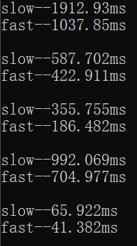
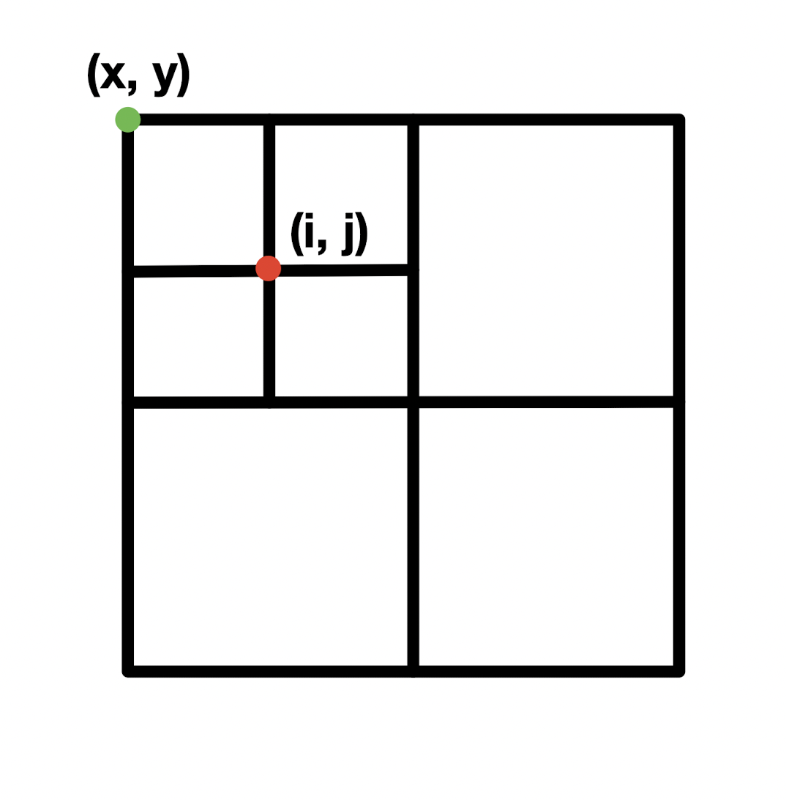
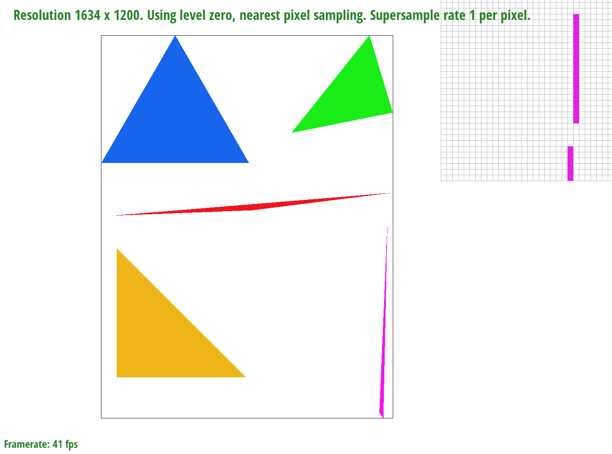
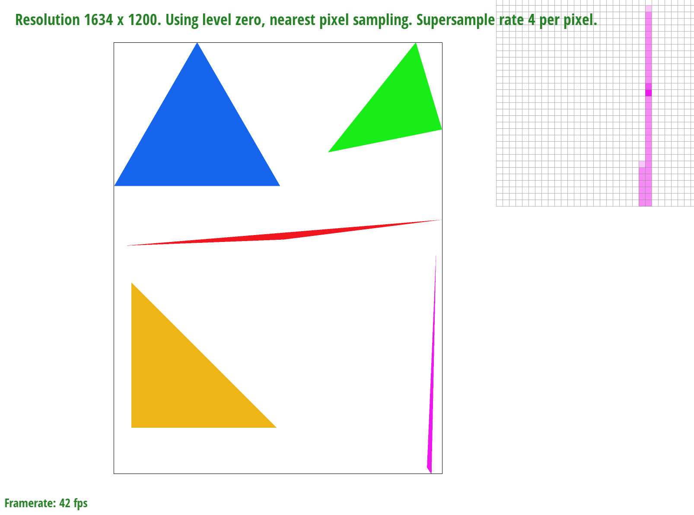
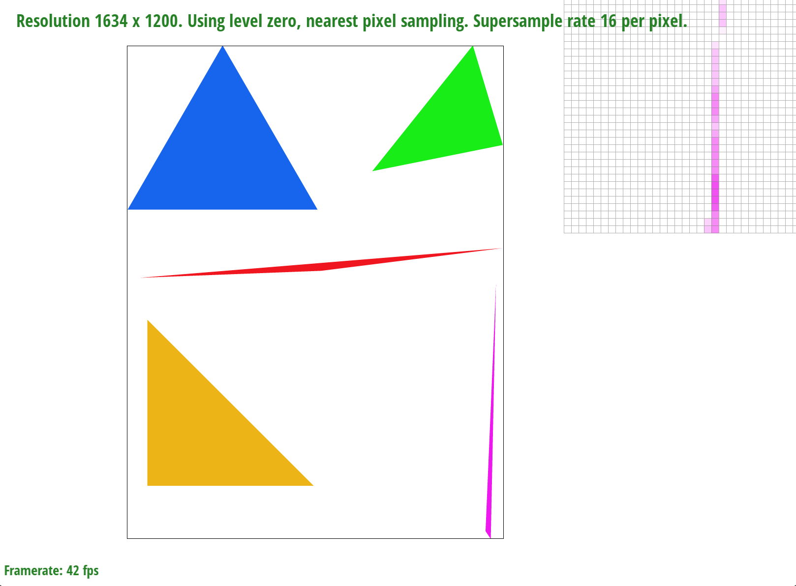
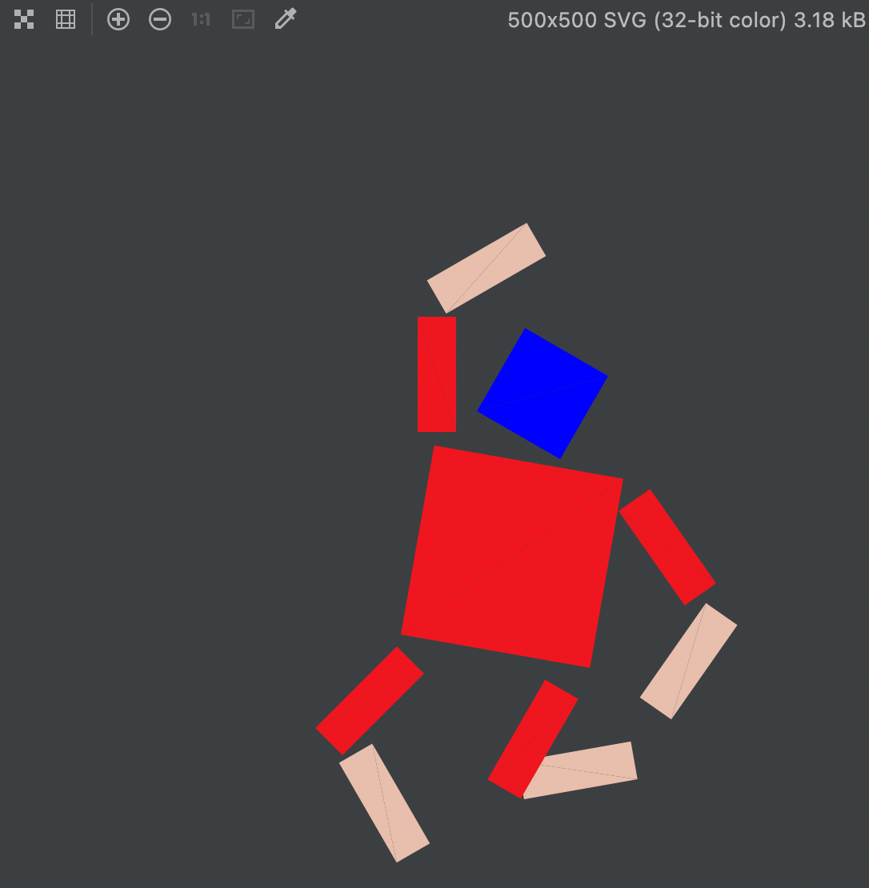

CS 184: Computer Graphics and Imaging, Spring 2018
Project 1: Rasterizer
Yifan Zhong, Yicheng Sun, CS184-Spring 2022
Overview
Give a high-level overview of what you implemented in this project. Think about what you've built as a whole. Share
your thoughts on what interesting things you've learned from completing the project.
Task 1: Drawing Single-Color Triangles
Helper Functions
-
/* check if the sample point(px, py) is in the triangle */
bool inTri(float px, float py, float ax, float ay, float bx, float by, float cx, float cy) {...}
-
/* check whether the point is inside or outside edge */
float l(float px, float py, float p0x, float p0y, float p1x, float p1y) {...}
-
/* normalize the number to resolve the precision issue of floating-point numbers during comparison */
int normalize_l(float f) {...}
Algorithms Workthrough
-
We calculate the maximum and minimum value of x and y in the triangle to limit our iteration in a smaller
rectangular
- max_x = (int) max({x0, x1, x2}) + 1;
- max_y = (int) max({y0, y1, y2}) + 1;
- min_x = (int) min({x0, x1, x2});
- min_y = (int) min({y0, y1, y2});
- We add 1 to the maximum value to ensure that all parts of the triangle are in the rectangle.
-
Since we only test the points within the rectangular space, this algorithms is no worse than the one
that check each sample within the bounding box.
-
We setup a nested for loop to iterate through each pixel from the top left corner to the bottom right
corner.
-
For each point (x, y), we first get the central value of the pixel (x+0.5, y+0.5) and pass it
to inTri().
-
inTri() takes three vertices of the triangle and the sample point as parameters, and calls l()
for each edge of the triangle.
-
With three return values from l(), we first normalize them to resolve the percision issue when comparing
with 0 by calling normalize_l(), inTri() check if all of them have the same sign, which eliminate
the issue caused by winding order of the vertices.
Optimization for Extra Credit
-
When we iterate through along a row/column, once we step out of the triangle, we will never return back to
the triangle on that row/column.
-
We set a condition to step out of the inner loop once we cross the bottom edge of the triangle.
-
We initialize a flag bool y_flag = false in the outer loop. Once we enter the triangle, set
flag to be true.
-
During the inner loop, if we find that the y_flag change from true to false, we
break the loop.
-
Timing Comparison Table

Sample Output
-
The pixel inspector is centered on the upper vertex of the purple triangle. The triangle is discontinuous at
this point.

Task 2: Antialiasing by Supersampling
Algorithms Workthrough
-
In RasterizerImp::rasterize_triangle()
-
Similar to what we did for task 1, we first get the max and min value of x and y to setup a loop
from upper left corner to bottom right corner of the bounding box.
-
Using the sample_rate initialized in RasterizerImp, we calculate the number of samples per edge
int r = (int) sqrt(this->sample_rate);.
-
In addition to the nested for loop from task 1, we add another two nested loops to iterate through
subparts of each pixel. We call inTri() for each sample point similar to task 1.
-
One thing to note is that since we are evaluating the subpart of each pixel, the x, y value for the
sample point change to (x+(i+0.5)/r, y+(j+0.5)/r). Here, i is the sampling position on the
x-coordinate, j is the sampling position on the y-coordinate. The following image shows the relations
between x, y and i, j when the sample rate is 4.

-
Instead of rasterize the sample point directly, we add it to the sample_buffer at index of y * width
+ x * this->sample_rate + i * r + j.
-
y * width + x locates the pixel we are supersampling, and i * r + j locates the sample
point within the pixel.
-
In RasterizerImp::set_sample_rate():
- We change the first parameter of resize() from width * height to width * height *rate.
- We add a call to clear_buffer() to clear the sample buffer after resize.
-
In RasterizerImp::set_framebuffer_target():
- We change the first parameter of resize() to width * height * rate as well.
-
In RasterizerImp::fill_pixel():
- Since we are supersampling a higher resolution image first, the index for the pixel to fill in sample_buffer becomes a
sample point. The index changes to (y * width + x) * this->sample_rate + i, and we need to loop sample_rate times
to fill the entire pixel with color c.
-
In RasterizerImp::resolve_to_framebuffer():
- For each pixel point, we create a temp_color[] array to store the floating RGB values. We then iterate over each sample point within the current pixel to obtain the net RGB value for that pixel.
- Note that the index of the current sample point is (y * width + x) * this->sample_rate + i where i is the value from 0 to this->sample_rate.
- We average the RGB net values to obtain the color of the pixel after supersampling.
- Finally, similar to the original code in this function, we call rgb_framebuffer_target() to render the frame.
-
Different from the original rasterizer pipeline, we first supersampling the image by simple_rate and before eventually
populating the pixel, we will downsampling the pixel and take the average of the pixel color.
Sample Output
As supersampling rate increate, we are sampling finer in each pixel. At the upper side of the triangle, since the corner
is extremely skinny, less sample points are categorized as be in the triangle. Thus, the color value of that corner is
getting lighter after averaging over the whole pixel. Moreover, as we approaching the corner vertex, higher sampling
rate will result in lighter color.
|

Supersample rate: 1
|

Supersample rate: 4
|
|

Supersample rate: 16
|
Extra Credit
- xxxxxxxxxxxxxxxxxxxxxxxxxxxx
- xxxxxxxxxxxxxx
- xxxxxxx
Task 3: Transforms
Cubeman
- We apply rotation and transition to each part of the cubeman respectively to make it look like he was jumping.
- We also changed the color of his head to blue and half of his arms and legs to skin color to make it look like he is
wearing short sleeves and shorts.
- Finally we apply scale to the whole robot to make it bigger.

Extra Credit
- xxxxxxxxxxxxxxxxxxxxxxxxxxxx
- xxxxxxxxxxxxxx
- xxxxxxx
Task 4: Barycentric coordinates